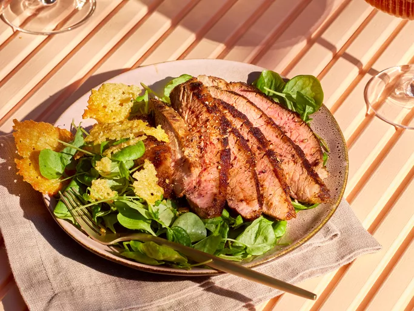

This Parmesan espresso martini steak, rubbed with coffee and served with salty fricos and lightly dressed watercress, is inspired by the Parmesan-topped espresso martini trend that was everywhere last year.
Ingredients
- 1 cup shredded Parmesan cheese
- 2 teaspoons instant espresso powder
- 1 teaspoon onion powder
- 1 teaspoon paprika
- 1 teaspoon brown sugar
- 3/4 teaspoon kosher salt, divided
- 1/2 teaspoon freshly ground black pepper, divided
- 1/4 teaspoon chili powder
- 1 1/2 pounds flank steak
- 6 cups watercress and / or arugula
- 2 tablespoons olive oil
- 2 tablespoons red wine vinegar
Directions
- Parmesan fricos: Preheat the oven to 400 degrees F (200 degrees C). Line a large baking sheet with parchment paper. Make 12 piles of Parmesan (about 2 teaspoons each), spacing about 1 inch apart, on the prepared baking sheet.
- Bake in the preheated oven until cheese is melted and edges are browned, 6 to 8 minutes. Let cool.
- Preheat an outdoor grill to medium (350 to 375 degrees F (175 to 190 degrees C)).
- Combine espresso powder, onion powder, paprika, brown sugar, 1/2 teaspoon salt, 1/4 teaspoon pepper, and chili powder in a small bowl. Rub mixture generously over all sides of steak.
- Oil grill grates. Grill steak over direct heat, covered, turning halfway through, 13 to 16 minutes or until an instant-read thermometer inserted into thickest part registers 145 degrees F (63 degrees C). Transfer steak to a cutting board and tent with foil; let rest 5 minutes. Thinly slice steak across the grain.
- Toss watercress with oil, vinegar, and remaining 1/4 teaspoon each salt and pepper. Serve with steak and Parmesan fricos.